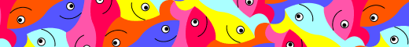 |
| TUTORIAL I |
| FISH |
In this tutorial, we will create an aspect-filled Heesch tiling of fish.
After starting Tess, begin by selecting New Heesch Tiling
from the File menu. Our fish example will use Heesch tiling
CC3C3C6C6.
First adjust the list of available tilings by specifying,
under the Consider tiles heading,
that you are considering tiles
without translations,
with half-turns, and
without glide reflections.
Then, as shown in figure 1, select the CC3C3C6C6 tiling.
If the Heesch symbols (names) are not visible, select Show Heesch Symbols
in the Heesch Tiling menu.
The New Heesch Tiling window shown in figure 1 includes rotation markers (small grey diamonds and regular polygons)—you
can show / hide these by selecting Show Rotation Markers from the View menu.
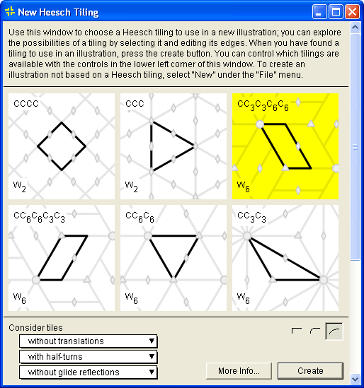
Figure 1. New Heesch Tiling window
with tiling CC3C3C6C6 selected.
The CC3C3C6C6 Heesch tiling fills the plane with copies of a single tile
with six vertices.
Three of the vertices lie on centers of rotational symmetry. These vertices are fixed and cannot be moved.
The other three vertices lie on T-junctions. Select and then move the top T-junction vertex a little to the left and up,
so that you see something close to figure 2. The other T-junction vertices will automatically move so that
the symmetry conditions remain satisfied.
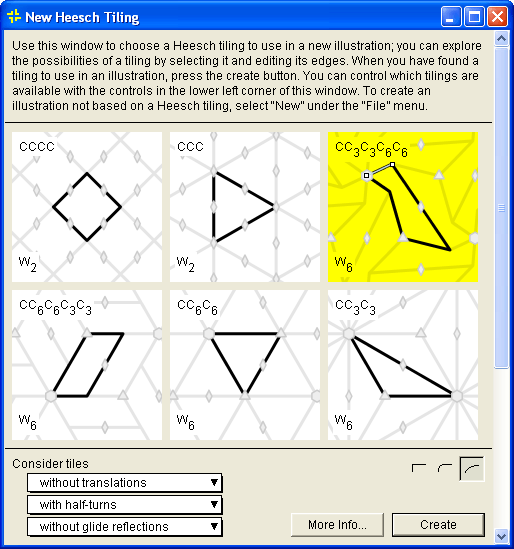
Figure 2. New Heesch Tiling window
after a little editing
If you were trying to decided on which type of tiling to use, you might at this point try editing
other tilings in the New Heesch Tiling window, but since we’ll be using
CC3C3C6C6, simply click on Create to bring up
a new illustration window, as shown in figure 3.
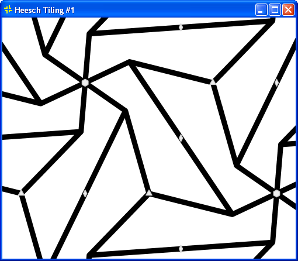
Figure 3. Newly created Heesch tiling.
I then edited the curves defining the tiling a little more and saved the illustration as “Fish”.
See figure 4. So that you can follow along, I’ve selected all curves so that all control points are showing.
(The curves are using 100% smooth corners—corner controls are at the bottom of the tool window.
You can bring up tool tips by leaving the cursor motionless over a tool.)
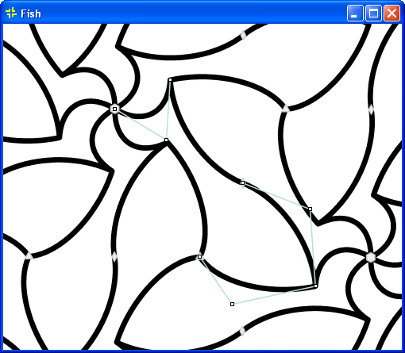
Figure 4. Fish tiling.
Select all three curves and then fill the tiles by selecting the fill and stroke icon in the tool window.
Figure 5 shows the result with red as the fill colour.
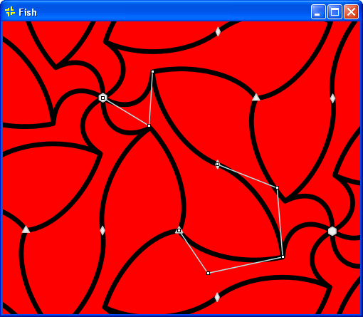
Figure 5. Red fish tiling.
Then select Aspect Fill from the Object menu. This will not cause a visible change immediately.
Select one of the six curves emanating from a sixfold rotational symmetry and choose a new fill colour
from the tool window. Only fish sharing a single orientation will change—this is what is meant by aspect filling.
If you then select another one of the six emanating curves and another
fill colour, you will then colour another set of fish.
Figure 6 shows the illustration I created by picking a different colour for each aspect / orientation.
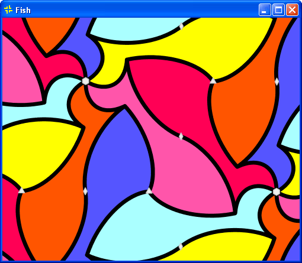
Figure 6. Aspect-filled fish tiling.
After a little more editing, I produced the illustration shown in figure 7 and saved it as “FishFinal”.
I recommend that you regularly save versions of your work using different names (including the date / time
in each file name is one simple and useful approach).
This lets you look back at, or return to, earlier stages of an illustration.
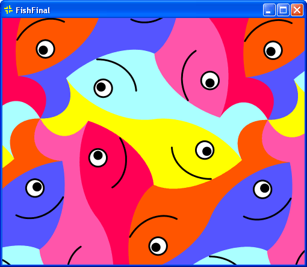
Figure 7. Final fish tiling.
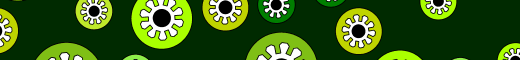 |
| TUTORIAL II |
UNIDENTIFIED
GREENISH OBJECTS |
In this tutorial, we will create a family of greenish objects
set against a dark green background.
Begin by starting Tess and selecting New from the File menu.
Take a look at figure 1 to see the shape I created. You can follow along
by creating a similar or an entirely different shape. To create a shape like mine:
- Draw a green disc (enter “100%” as the maximum corner radius in the tool window
and use the Foci Ellipse Tool; to see tool tips, let the cursor loiter
over a tool in the tool window).
- Draw a white decagonal gadget using the
Regular Polygon Tool. Click once in the illustration window to begin and then
use the left- and right-arrow keys to adjust the number
of sides while moving the cursor around. Click again to place the regular polygon
and then edit the shape as desired.
- Draw a black disc.
I saved my creation as “UGO” for Unidentified Green Object.
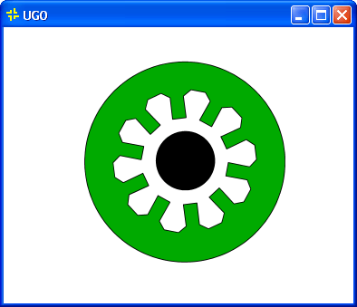
Figure 1. Unidentified green object.
I then changed symmetry groups, from C1 to W3 (Fejes Toth notation);
see figure 2.
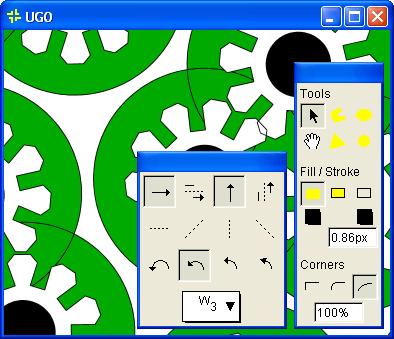
Figure 2. Unidentified green object,
W3 symmetry group.
As I didn’t want my green object to overlap itself, I selected it (via Select All from the
Edit menu) and resized and repositioned it, as shown in figure 3.
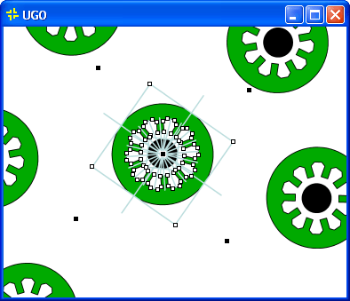
Figure 3. Smaller unidentified green object.
To create the illustration shown in figure 4, I then copied it (via Copy from the Edit
menu) and pasted (via Paste from the Edit menu) multiple copies, resizing and repositioning
after each pasting. I saved my creation as “UGOs”.
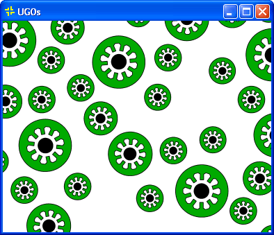
Figure 4. Unidentified green objects.
As I wanted a variety of greens, I selected the green discs one by one and fine-tuned their fill colours.
To fine-tune a fill colour, hold down the Ctrl key before clicking on the fill colour swatch.
The result is shown in figure 5.
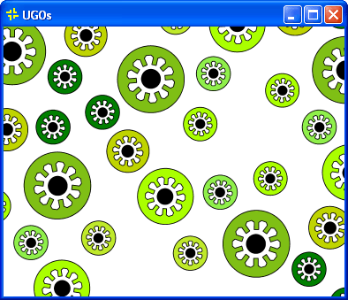
Figure 5. Unidentified greenish objects.
I then clicked on the background (to ensure that no object was selected),
selected a filled object style (the leftmost rectangle under the Fill / Stroke
tool heading), and selected a dark-green fill (by first selecting black and then fine-tuning that selection
towards green).
To set the background to this fill style, I then selected Set Background from the View menu.
(To clear a background fill, first choose the unfilled object style and then select Set Background.)
Figure 6 shows my final creation.
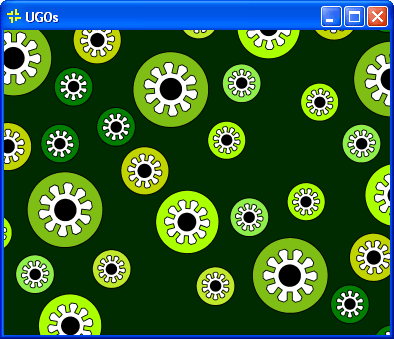
Figure 6. Unidentified greenish objects
over dark green background.
|